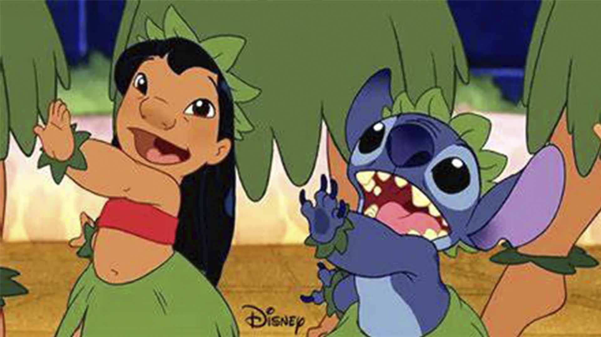
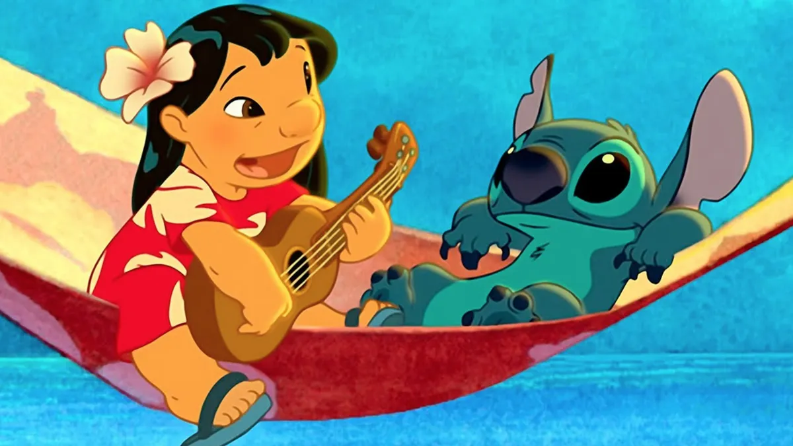

Lilo y Stitch
La historia sigue a Lilo, una niña hawaiana que vive con su hermana mayor, Nani, tras la pérdida de sus padres. Lilo es una niña peculiar, amante de la música de Elvis Presley y con dificultades para encajar con los demás. Por otro lado, Stitch es un experimento genético alienígena (Experimento 626) creado para causar caos y destrucción, que escapa de su planeta y aterriza en la Tierra.
Lilo adopta a Stitch pensando que es un perro, y aunque al principio Stitch solo busca usarla como escudo para evitar ser capturado, poco a poco desarrolla un vínculo genuino con ella. A través de su relación, ambos aprenden sobre el significado de la familia, o como Lilo lo llama: "Ohana", que significa que nadie se queda atrás ni se olvida.
La película aborda temas como la importancia de la empatía, la aceptación de las diferencias y el poder del amor familiar, todo envuelto en un ambiente tropical lleno de diversión y momentos conmovedores
Menu Principal

